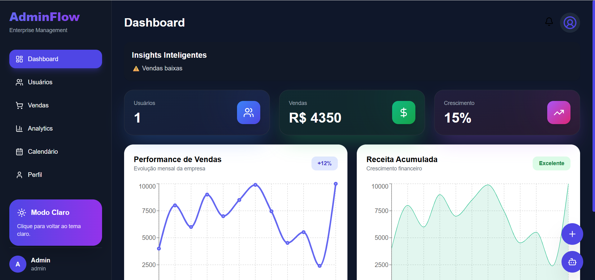
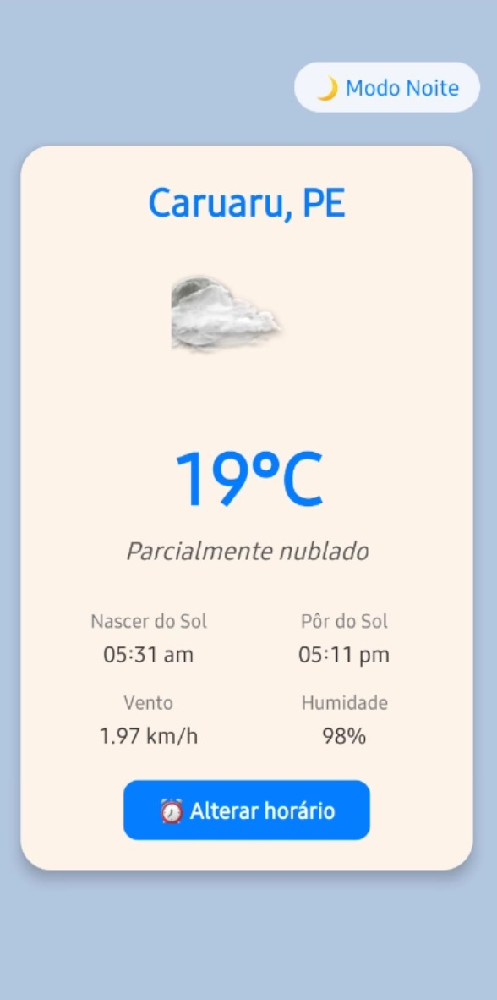
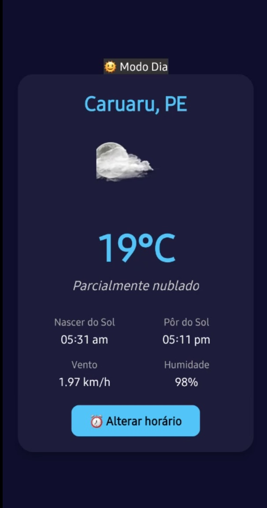
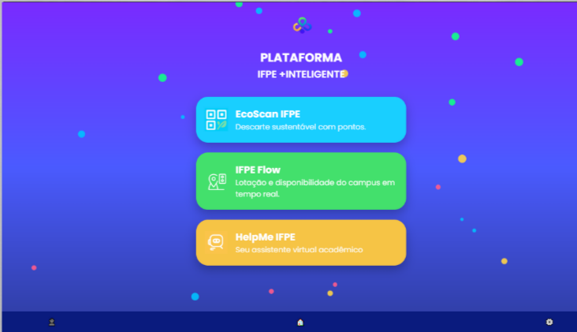
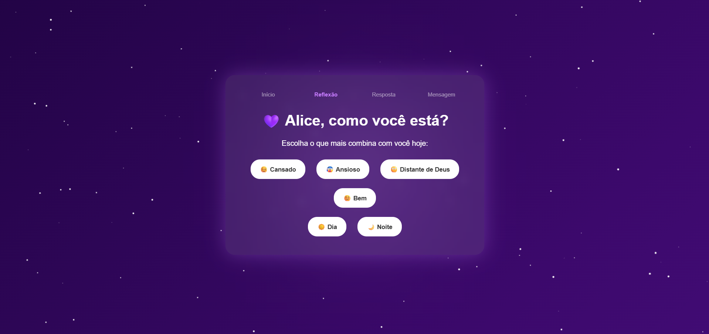
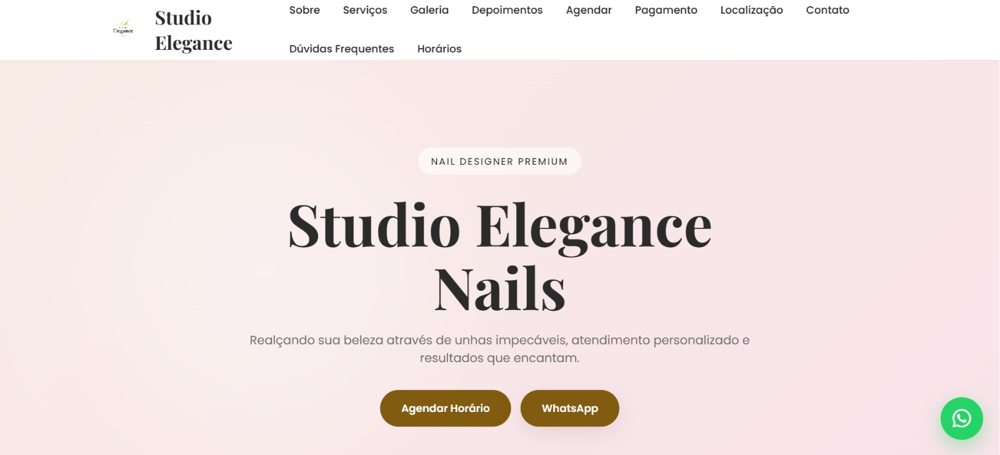
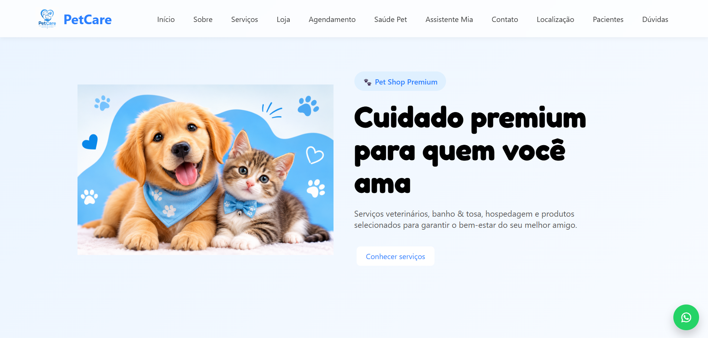

Meus Projetos
Alguns dos projetos que desenvolvi durante minha trajetória.



Nosso App Clima
Aplicativo de previsão do tempo com modo claro e escuro.
HTML
CSS
JavaScript
GitHub
Não publicado



